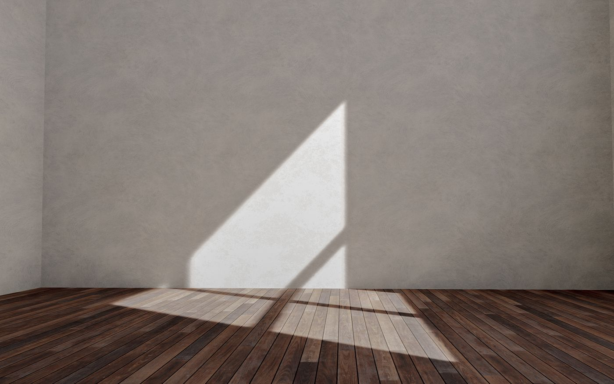
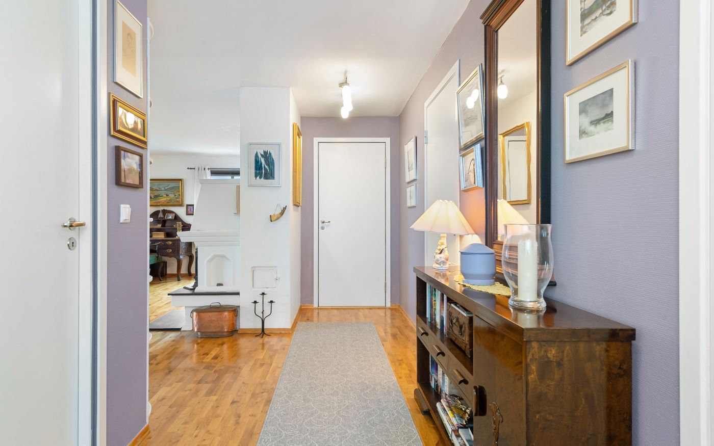
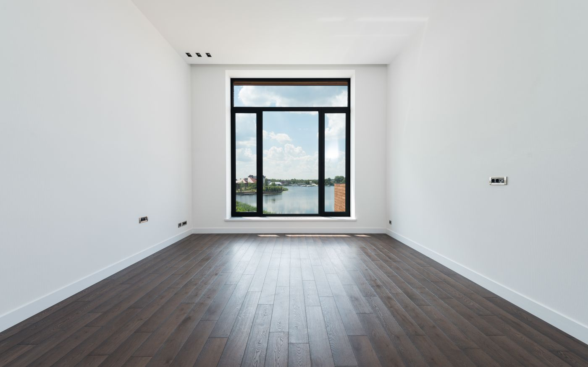

Sens de pose
Quel sens de pose choisir pour son parquet ?
Cinq critères suffisent à trancher, et ils ne se valent pas. Voici l'ordre dans lequel les regarder.
Guides
Des guides pratiques sur le choix du parquet, la préparation du support, le sens de pose, les motifs et les finitions. Écrits pour être utiles sur le chantier, pas pour remplir une page.
Sens de pose
Cinq critères suffisent à trancher, et ils ne se valent pas. Voici l'ordre dans lequel les regarder.

La règle la plus citée du parquet. Encore faut-il savoir ce qu'elle recouvre et quand elle cesse d'être vraie.

La plupart des désordres viennent du support, pas du parquet. Voici les contrôles à mener avant la première lame.

Une coupe d'onglet sépare ces deux motifs. Elle change le rendu, le prix et la pose.

Huit erreurs reviennent en boucle sur les chantiers. Toutes se corrigent avant la pose, aucune après.

Le débat porte rarement sur le bon terrain : ce qui change vraiment, c'est la stabilité dimensionnelle.

Le couloir est le seul espace où la règle de la lumière passe au second plan.

Poser dans la largeur élargit vraiment — à condition d'en accepter les coupes.
Aucun guide ne correspond à ce filtre pour le moment.
Décrivez votre pièce, votre support et le rendu recherché en cinq étapes. Vous recevez une réponse construite, sans démarchage.